Overview Map · Three-Level Scope
The research area frames industry and regional links; the overall design area organizes spatial structure. The three key areas receive distinct responses: controlled testing at Zhongzhiyuan, technology transfer and community service at AI Origin, and a non-boundary, non-quantitative station-area walking and public-space concept at Dazhongsi.
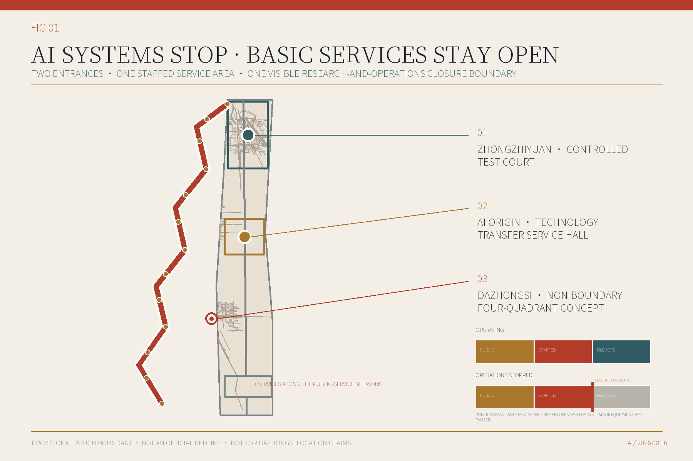
Existing Resources and Renewal Potential
The inventory separates verified public context, design-stage resources, and required field evidence. Five renewal classes define the method, but no parcel or building receives a class before survey, condition, use, rights, and specialist evidence are verified.
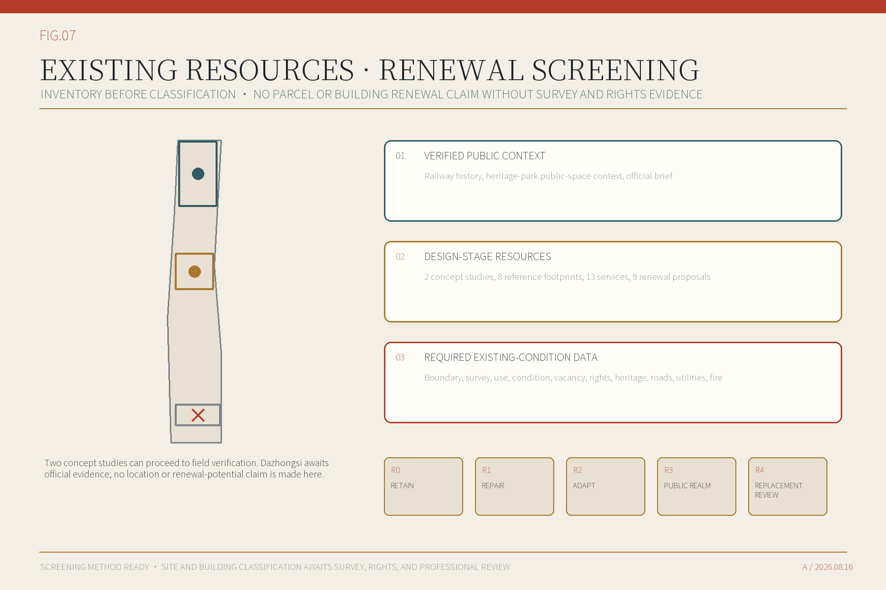
Land-Use Structure · Buildings
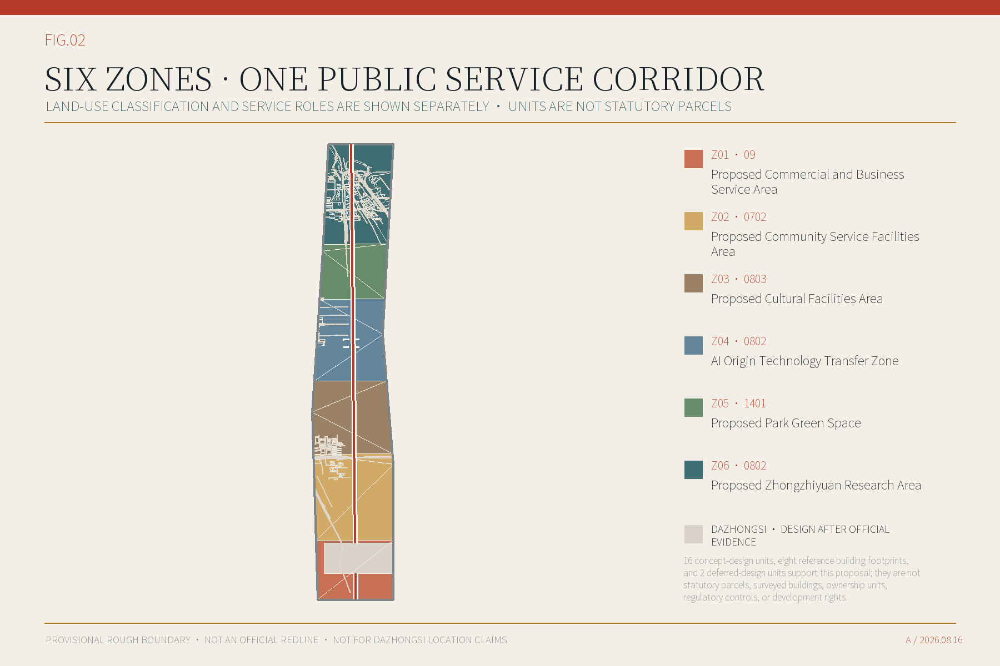
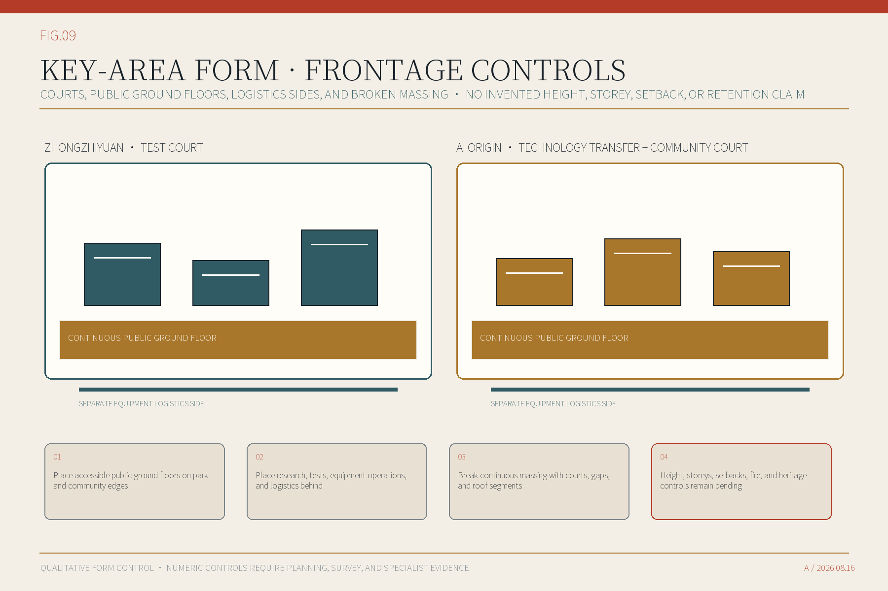
Six proposed functional areas cover five land-use classes under the current MNR classification. Eight reference footprints test public ground floors, staffed service, research and testing, and separate logistics. They are not surveyed buildings, statutory parcels, or approved development capacity; height, storeys, and setbacks remain pending.
Key Areas
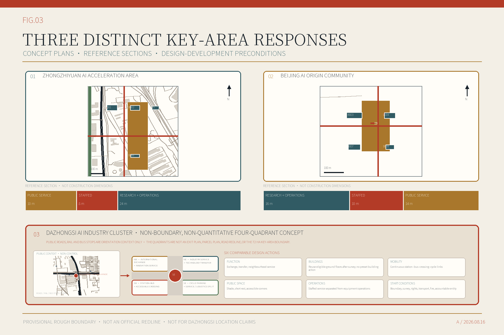
Zhongzhiyuan and AI Origin show concept plans, reference footprints, public space, and sections. New AI Origin services require a written co-location, referral, or expansion agreement with the existing Talent Service Mobile Station and do not duplicate its 17 human-resources services. Dazhongsi uses a non-boundary, non-quantitative four-quadrant concept centred on the interchange to compare function, building action, mobility, public space, operations, and start conditions. The diagram does not enter GeoJSON and supports no exit location, road redline, land-use, development-capacity, or project-boundary claim.
Industry Ecosystem and Indicator System
The AI Innovation Index, talent density, industry output, cluster density, industry-space scale, and live-work and service completeness now have formulas and evidence gates. Values remain pending because auditable data is unavailable.
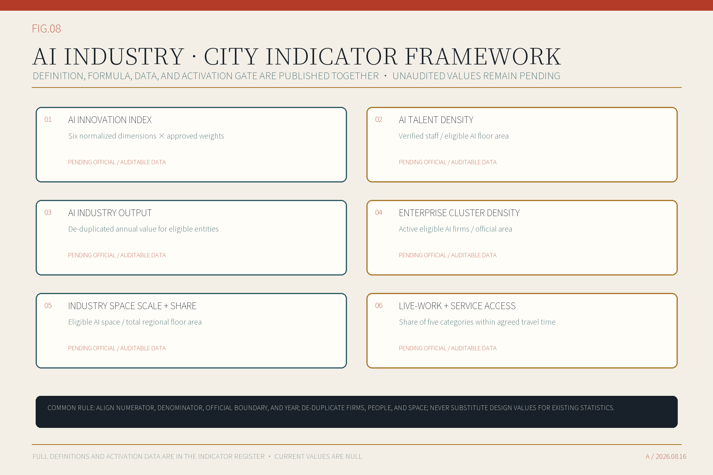
Mobility and Walking · Blue-Green Public Space
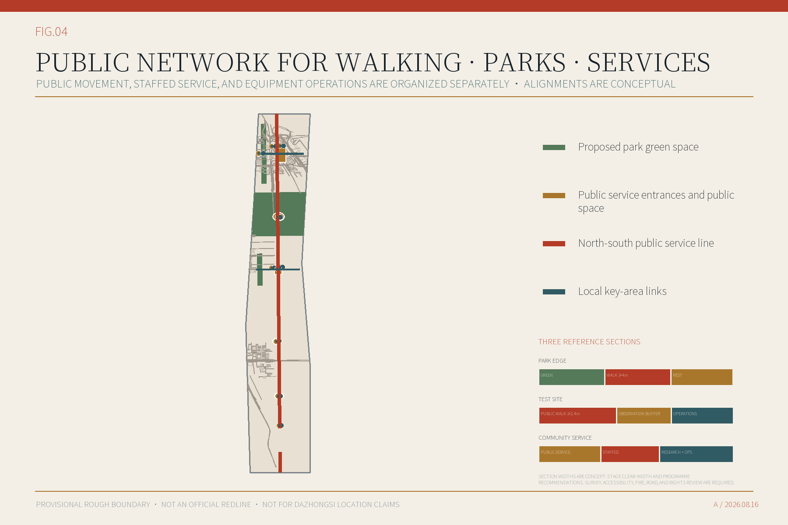
Mobility lines are conceptual, not road redlines. Thirteen accessible routes distinguish public queues, equipment logistics, egress, and operations closure. Three reference sections test park, controlled-test, and community-service edges. Dazhongsi has no georeferenced link.
AI Scenarios
All thirteen services have a clear spatial setting. Compute and model-usage service, trusted-data and compliance service, and low-speed robot testing are the three industry tests. Every service states minimum data, human responsibility, appeal, and stop conditions.
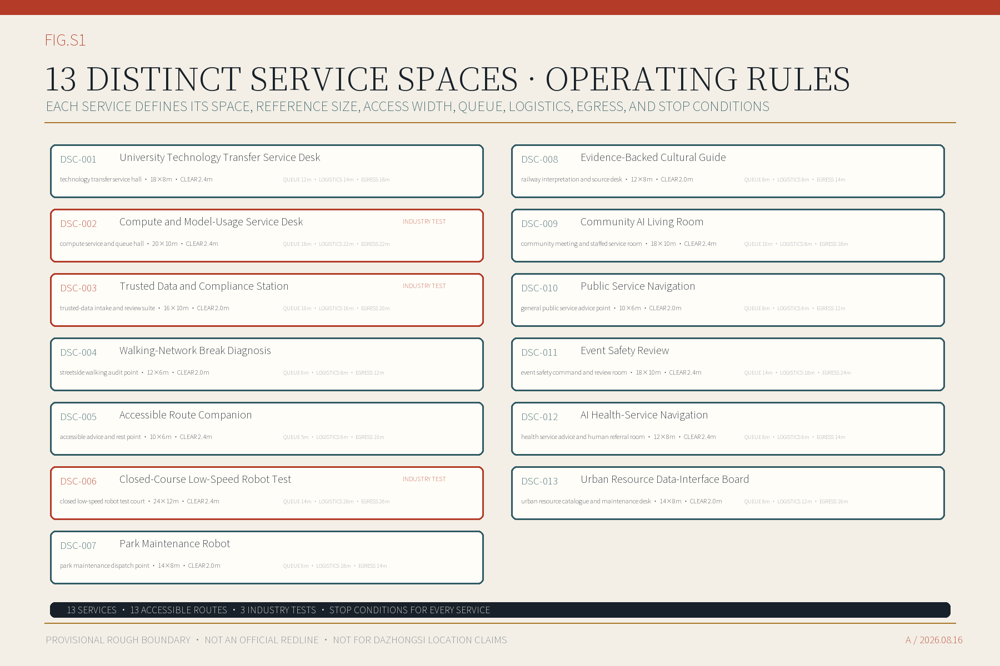
- DSC-001University Technology Transfer Service DeskTechnology transfer service
- DSC-002Compute and Model-Usage Service DeskIndustry test
- DSC-003Trusted Data and Compliance StationIndustry test
- DSC-004Walking-Network Break DiagnosisUrban diagnosis
- DSC-005Accessible Route CompanionPublic service
- DSC-006Closed-Course Low-Speed Robot TestIndustry test
- DSC-007Park Maintenance RobotUrban operations
- DSC-008Evidence-Backed Cultural GuideCultural service
- DSC-009Community AI Living RoomPublic participation
- DSC-010Public Service NavigationPublic service
- DSC-011Event Safety ReviewUrban operations
- DSC-012AI Health-Service NavigationPublic service
- DSC-013Urban Resource Data-Interface BoardPlatform operation
Cultural Displays, Public Visit, and Operations
Three public-contribution displays, an annual public service programme, an open developer working group, a bilingual visit route, and a six-step project path are now part of the reader-facing package. They remain conceptual; Dazhongsi is excluded from the current route, and international exchange requires content clearance, approval, and a named host.
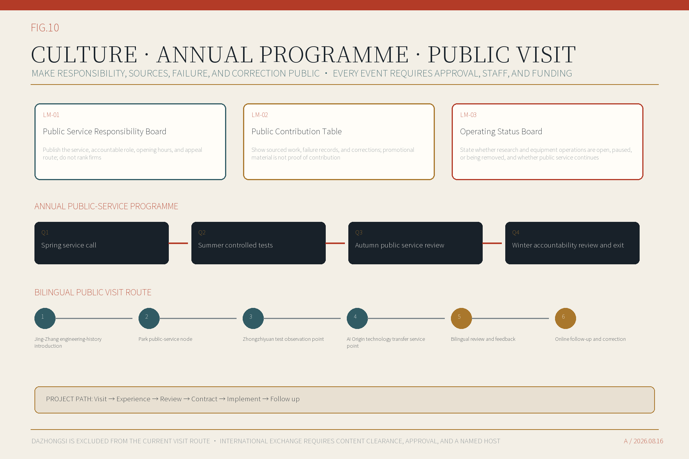
Renewal Projects
Nine renewal proposals are grouped into immediate preparation, later expansion, and Dazhongsi work after official evidence arrives. All remain conceptual and require accountable owners, site rights, funding, fire safety, utilities, and operating plans.
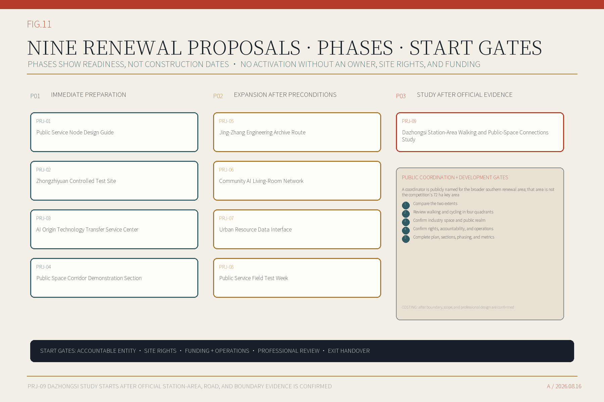
- 01Public Service Node Design GuideIMMEDIATE PREPARATION
- 02Zhongzhiyuan Controlled Test SiteIMMEDIATE PREPARATION
- 03AI Origin Technology Transfer Service CenterIMMEDIATE PREPARATION
- 04Public Space Corridor Demonstration SectionIMMEDIATE PREPARATION
- 05Jing-Zhang Engineering Archive RouteEXPANSION AFTER PRECONDITIONS
- 06Community AI Living-Room NetworkEXPANSION AFTER PRECONDITIONS
- 07Urban Resource Data InterfaceEXPANSION AFTER PRECONDITIONS
- 08Public Service Field Test WeekEXPANSION AFTER PRECONDITIONS
- 09Dazhongsi Station-Area Walking and Public-Space Connections StudySTUDY AFTER OFFICIAL EVIDENCE
Core Metrics
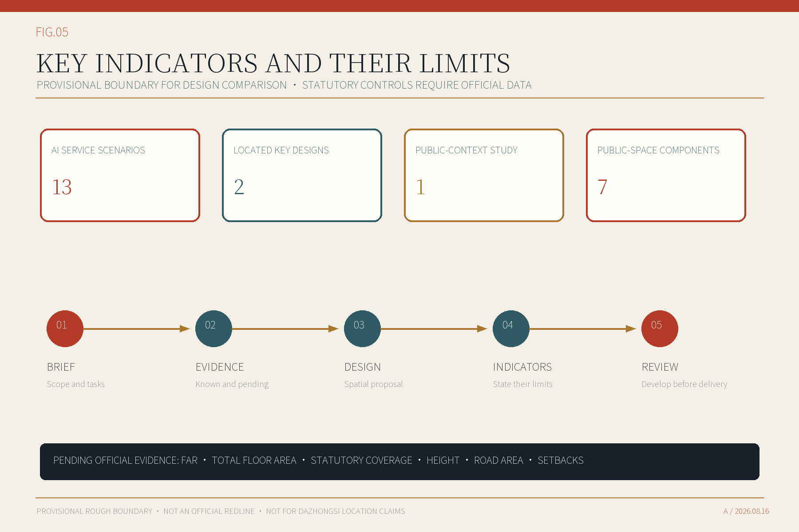
Visual Identity and Usage Rules
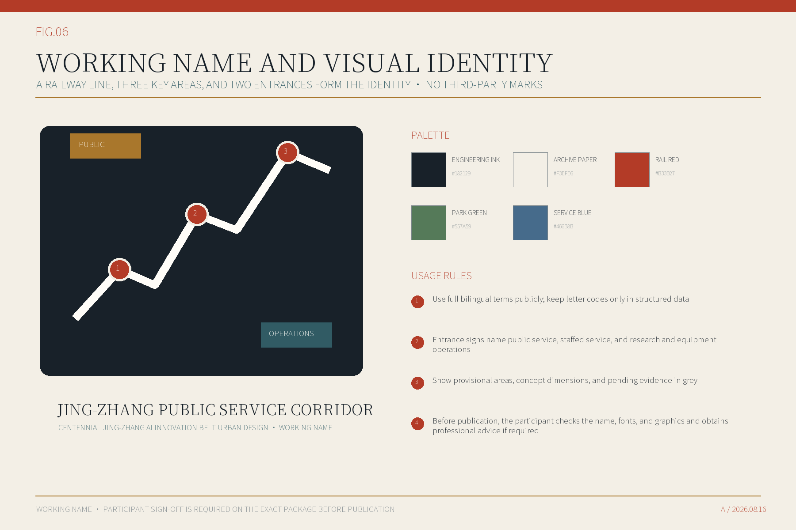
Jing-Zhang Public Service Corridor is a working design name, not an official planning name. Name-similarity, font, and graphic-rights review remains required before publication.
Proposal Scope and Task Coverage · Delivery Conditions (Self-Check Status)
Sources · Assumptions and Development Conditions
The proposal draws on the qualification announcement, project taskbook, Haidian and Beijing policies, urban-design and land-use guidance, AI and data-governance rules, and six innovation-district precedents. Current assumptions support concept design only; official boundaries, planning controls, surveys, ownership, roads, utilities, fire safety, heritage, and operators remain required for development.
Seven Public-Space Components
- KIT-01Two-Entrance SignOWNER PENDING
- KIT-02Staffed Service DeskOWNER PENDING
- KIT-03Operations Closure LineOWNER PENDING
- KIT-04Accessible Backed SeatOWNER PENDING
- KIT-05Paper Route RackOWNER PENDING
- KIT-06Equipment Removal DoorOWNER PENDING
- KIT-07Information Version and Update NoticeboardOWNER PENDING